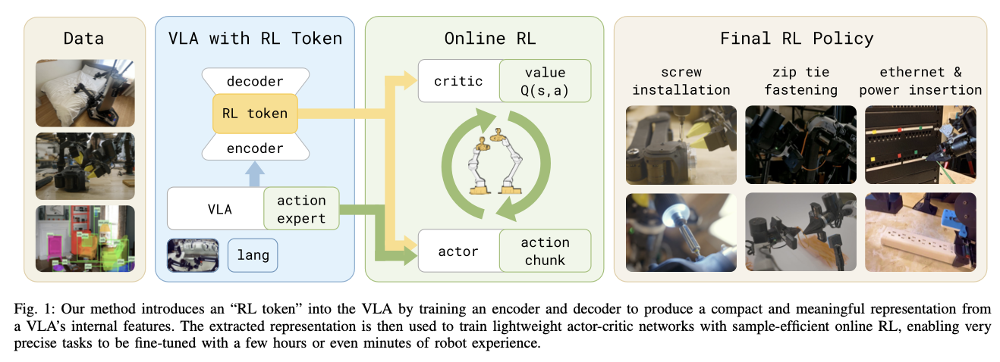
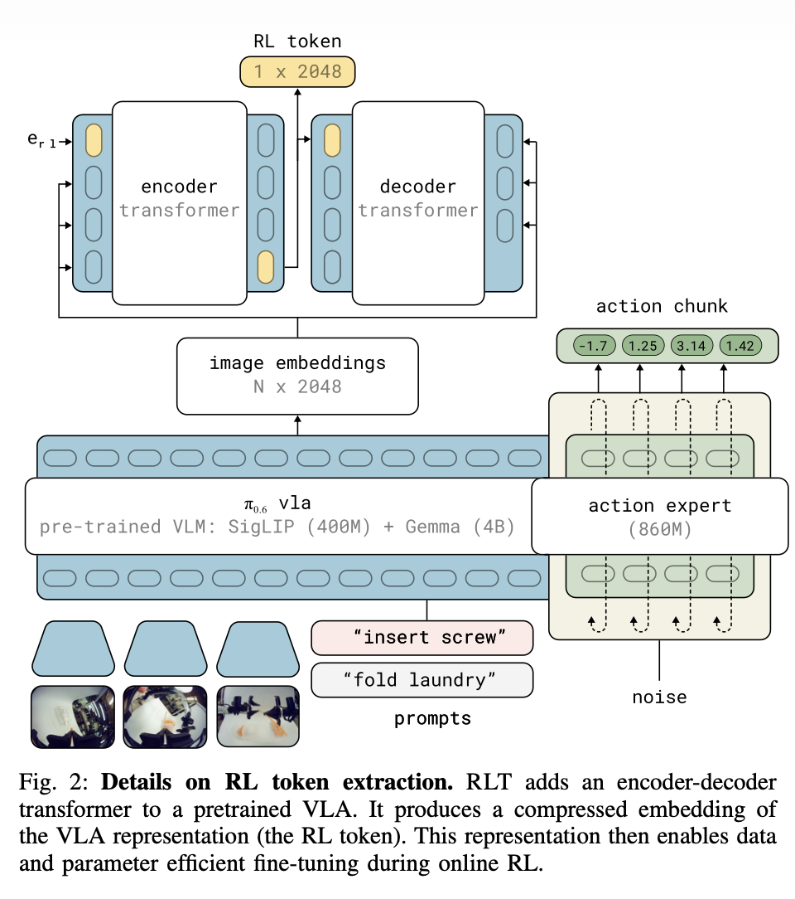

RL Token

The Problem It Tackles
VLA foundation models generalize well, but on new downstream tasks — especially high-precision contact-rich tasks — the last few millimeters are often not accurate enough.
Movements are slow.
They hesitate around contact: probing, backing off, retrying.
Tiny errors accumulate into outright failure at the critical stage.
Demonstration data alone can hardly cover every precision contact detail.
The authors argue RL is the perfect complement: RL can practice repeatedly around the target task, concentrating optimization on the most critical, difficult, precision-hungry phase.
The catch:
- Doing online RL on the entire VLA is impractical: too many parameters, too much compute, hopeless sample efficiency.
Performance ceiling: VLAs learn by imitation. If the human teleoperator's hand trembles, or the motion isn't smooth, that is all the VLA can ever learn.
Missing touch and dynamics: a purely visual VLA cannot feel "resistance" or "jamming". In tight assembly many motions require wiggling and probing by feel — nearly impossible to learn from imitation alone.
Traditional small-model RL trains efficiently but throws away the VLA's rich priors.
- Fine-tuning the large model is slow: RL that directly updates a multi-billion-parameter VLA is computationally brutal, and collecting real-robot data online is extremely slow.
Training a lightweight RL model from scratch is fast, but discards all the rich visual and semantic priors the VLA learned in pretraining — generalization suffers.
The core tension:
How do you keep the VLA's generalization and priors while gaining the sample efficiency and rapid adaptation of small-scale online RL?
The Goal
RLT's goal is not to "retrain a robot policy from scratch", but to:
- Preserve the pretrained VLA's perception and behavior priors.
- Run online RL with only a small amount of real-robot data.
- Focus optimization on the high-precision critical phase.
- Improve speed and success rate quickly via a lightweight actor-critic.
The paper's overall recipe:
- First, adapt the VLA so it can output a compact representation suitable for RL: the RL Token.
- Then freeze the VLA and train only a small actor and critic on top of the RL Token.
- The actor does not invent actions from zero — it refines around the VLA's reference actions.
- A regularizer anchors the policy near the VLA so online RL doesn't diverge.
Key Idea: The RL Token and Division of Labor
RL Token (RLT): the core logic is "the large model sees the big picture and advises; the small model does the fine-tuning."
Instead of letting RL read the VLA's huge internal feature vectors directly, the authors train an extra module that compresses the VLA's knowledge into a compact representation — the RL Token.
- Frozen VLA: parameters untouched; it provides broad visual-semantic understanding and an initial "reference action".
- Lightweight actor-critic: consumes the RL Token and makes local edits on top of the VLA's reference actions, specializing in the hardest, most precise part of the task.
Related Work
VLA
The authors trace the VLA lineage:
- The development of generalist robots.
- Two key techniques:
- action chunking: output several actions at once and execute them open-loop;
- stronger action-distribution modeling (diffusion, autoregressive) so the policy can express multimodal action distributions.
- Going further, large vision-language models become the backbone, yielding VLAs that inherit priors from internet-scale and robot data.
But the authors point out that a VLA's ceiling is still bounded by demonstration quality. If the task demands sub-millimeter precision and the demonstrations are noisy or inconsistent, the VLA simply cannot reach true high performance at the critical phase.
Real-World RL
The paper acknowledges that RL on real robots has proven:
- Off-policy actor-critic is feasible on physical hardware.
- Replay buffers improve sample efficiency.
- Human intervention / demonstration bootstrapping matters a lot.
- Frameworks like SERL and HIL-SERL can learn contact-rich manipulation within hours.
But these methods share a common limitation:
- They usually train small policies.
- Their perception encoders are often just generic pretrained visual encoders.
- They don't exploit the strong behavioral priors and multimodal task understanding of modern VLAs.
RL fine-tuning of VLA
The third line of work is "how to RL fine-tune a pretrained VLA", which the authors split into two ends:
One end: update the entire VLA
E.g. RECAP and PPO-style VLA fine-tuning directly optimize the whole model. Problems:
- Very heavy.
- Not efficient enough for online RL on real robots.
- Poor fit for "must show results within hours" scenarios.
The other end: freeze the model, train a light add-on
For example:
- ConRFT: freeze the encoder, tune the action head.
- Policy Decorator: add a residual policy.
- PLD: pretrain a critic + residual policy.
- DSRL: run RL guided in diffusion latent/noise space.
RLT's Mission
Keep the VLA's "common sense" while learning fine motions as fast as a lightweight RL model.
- RL Token: distill a compact representation from inside the VLA that preserves pretrained knowledge and pairs with lightweight RL.
- Chunked actions: reuse the VLA's chunk interface to shorten the effective decision horizon.
- Reference-action conditioning + regularization: rather than predicting residuals or noise, edit locally around the VLA's chunk.
RLT Overall Approach
What the large VLA handles
- Perception.
- Language understanding.
- Providing a reference action chunk.
- Providing a compact state representation (the RL Token).
What the small RL module handles
- Fast online refinement on the specific task at hand.
- Learning a policy that is faster, steadier and better at contact than the VLA alone.
- Especially improving the critical phase.
Why it works
Because this is not "learning a robot policy from zero" — it is:
Starting from an already-decent VLA behavior and doing sample-efficient local optimization in its neighborhood.
Walking Through the Equations
RL Token definition
\[ z_{rl}=g_{\phi}([z_{1:M},e_{rl}])_{M+1} \]
- \(f(s,l;\theta_{vla})\): the last-layer token embeddings output by the pretrained VLA.
- \(z=f(s,l;\theta_{vla})\).
- \(z_{1:M}=\{z_1,...,z_M\}\): the embeddings of the VLA's input tokens.
- The VLA internally holds a long sequence of features \(z_1,...,z_M\).
- Intuitively these encode:
- what the image shows,
- what the language instruction says,
- the current robot state.
- All of this is mixed together into many token representations.
- \(e_{rl}=e_{\phi}(<rl>)\): a learnable special token embedding — think of it as a "read-out slot".
- Its job: collect and condense all the preceding information.
- \(g_\phi\): a lightweight encoder transformer.
- \([z_{1:M},e_{rl}]\): the RL token is appended to the original token sequence.
- \((\cdot)_{M+1}\): take the encoder output at that special token's position.
- \(z_{rl}\): the resulting RL Token.
Intuition
The essence of this step: add a learnable read-out head to the VLA's internal representation so it summarizes, by itself, a compact state vector suitable for RL.
Reconstruction loss \(L_{ro}\)
\[ L_{ro} = \mathbb{E}_D \left[ \sum_{i=1}^M \left\| h_\phi(d_\phi([z_{rl}, \bar{z}_{1:i-1}]))_i - \bar{z}_i \right\|^2 \right] \]
- \(D\): the task demonstration dataset.
- \(d_\phi\): decoder transformer.
- \(h_\phi\): linear output projection.
- \(\bar{z_i}=sg(z_i)\): stop-gradient targets from the original VLA embeddings.
- \([z_{rl},\bar{z}_{1:i-1}]\): autoregressive input — use the RL token and previous tokens to predict the current token.
- \(||\cdot||^2\): squared error.
What this achieves
It turns the RL token into an "information bottleneck":
- the encoder must squeeze the VLA's key information into \(z_{rl}\);
- the decoder must reconstruct the original embedding sequence from \(z_{rl}\) as faithfully as possible.
Joint objective for training the RL token
\[ \phi,\theta_{vla}=argmin_{\phi,\theta_{vla}}L_{ro}(\phi)+\alpha L_{vla}(\theta_{vla}) \]
- \(L_{ro}\): the reconstruction objective for the RL token.
- \(L_{vla}\): the VLA's supervised fine-tuning loss.
- \(\alpha\): coefficient weighting the VLA fine-tuning term.
Implication
The authors don't train only the RL token — a little task-specific VLA fine-tuning is allowed too, so that:
- the base VLA adapts slightly to the target task first;
- an RL token suited to that task is learned at the same time.
Afterwards:
- \(\theta_{vla}\) is frozen;
- \(\phi\) is frozen too;
- online RL trains only the actor/critic.
critic loss \(L_Q\)
\[ L_Q = \mathbb{E}_{(x, a_{1:C}, x') \sim B} \left[ \left( \hat{Q} - Q_{\psi}(x, a_{1:C}) \right)^2 \right] \]
with target: \[ \hat{Q} = \sum_{t'=1}^{C} \gamma^{t'-1} r_{t'} + \gamma^C \mathbb{E}_{a' \sim \pi_\theta} \left[ Q_{\psi'}(x', a') \right] \]
\(x=(z_{rl}, s^p)\): the RL state, composed of the RL token and extra proprioceptive state.
\(B\): replay buffer.
\(Q_\psi\): critic.
\(Q_{\psi'}\): target critic.
\(a_{1:C}\): the current chunk action.
\(x'\): next state.
\(a' \sim \pi_\theta\): sample the next chunk from the current actor.
\(\gamma\): discount factor.
\(r_{t'}\): reward for each step inside the chunk.
Why a chunk critic makes sense
The task has long-horizon sparse rewards: a single-step action can hardly tell how much it contributed to final success. Packing multiple actions into a chunk:
- shortens the effective horizon;
- makes TD backup propagate success signals more easily;
- suits high-frequency control and sparse real-robot rewards.
actor distribution
\[ \pi_\theta(a_{1:C} \mid x, \tilde{a}_{1:C}) = \mathcal{N}(\mu_\theta(x, \tilde{a}_{1:C}), \sigma^2 I) \]
\(a_{1:C}\): the action chunk produced by the RL actor.
\(x=(z_{rl}, s^p)\): input state.
\(\tilde a_{1:C}\): the reference action chunk from the VLA.
\(\mu_\theta(\cdot)\): the actor's mean output.
\(\sigma^2 I\): fixed-covariance Gaussian noise.
The actor's input is not just the state \(x\) — it also receives the VLA's reference action chunk.
This means the RL actor doesn't plan from zero; it learns "how to improve on the VLA's original suggestion".
actor loss \(L_\pi\)
\[ L_{\pi}(\theta) = \mathbb{E}_{s \sim B, a_{1:C} \sim \pi_{\theta}} \left[ -Q_{\psi}(x, a_{1:C}) + \beta \|a_{1:C} - \tilde{a}_{1:C}\|_2^2 \right], \quad \tilde{a}_{1:C} \sim \pi_{vla}(\cdot | s, \ell) \]
First term: \(-Q_\psi(x,a_{1:C})\)
Minimizing it is equivalent to maximizing the critic's prediction.
- Meaning: learn the action chunks that raise success rate / efficiency.
Second term: \(\beta||a_{1:C}-\tilde{a}_{1:C}||^2_2\)
A behavior-cloning-style constraint keeping the actor from straying too far from the VLA's reference actions.
The role of \(\beta\):
- large \(\beta\): more conservative, stays close to the VLA;
- small \(\beta\): bolder exploration, but easier to drift off the good prior and destabilize training.
\(\beta\) controls how strongly the actor is pulled toward the VLA's reference actions.
Method and Technical Details

Training has two main stages:
Stage one: distilling the RL Token
Inside the pretrained VLA, the authors attach a small transformer encoder-decoder:
- Inject a special token: at the end of the feature sequence the VLA produces for image + instruction, append a learnable \(e_{rl}\).
- Information-bottleneck compression: a lightweight transformer decoder compresses all features into this \(z_{rl}\) (the RL Token).
- Reconstruction supervision: to guarantee the token doesn't lose key information, the decoder is forced to reconstruct the original VLA features from it alone. The RL Token thus becomes a high-fidelity condensation of the VLA's knowledge.
- Freeze the base: once the extractor is trained, the VLA and the extractor are locked (frozen) and cost no further compute.
Stage two: online RL fine-tuning
With the RL Token extracted, the VLA and token-extractor are fully frozen. Next, a small actor and critic are trained.
State input: the actor and critic take the RL Token plus proprioception (e.g. joint positions). The robot runs at 50 Hz; predicting one step at a time makes rewards extremely sparse and training fails to converge, so the policy outputs an entire action chunk at once.
BC regularizer: to stop RL from flailing blindly, the actor also receives the VLA's reference chunk \(\tilde{a}_{1:C}\), and the loss adds a penalty \(\beta \| a_{1:C}-\tilde{a}_{1:C}\|_2^2\) forcing outputs to stay near the VLA's advice. This turns aimless global search into efficient local refinement.
If a reference action is always provided, the actor may get lazy and simply copy the VLA instead of learning to improve. So during training the reference is randomly zeroed, forcing the actor to be competent on its own.
Chunked training: actor and critic learn and are scored in chunks, solving the reward-sparsity problem of high-frequency control.
Stage three: human intervention and critical-phase handover
For real-world efficiency the authors use a "partial takeover" strategy:
- Segmented execution: the base VLA handles the easy grasping and moving; the moment the precision-critical phase begins, control switches instantly to the RL policy.
- Human intervention: if the RL policy struggles, a human operator takes over directly. These interventions go into the replay buffer as "mentors", helping RL escape bad states quickly.
Experiments
To show RLT really works in the wild, the authors tested four sub-millimeter-precision tasks on a real robot: screw driving, cable-tying, ethernet plugging, charger insertion — applying RL mainly to each task's hardest critical phase.
- Performance leap (Q1): after a few hours — sometimes minutes — of online training, RLT sped up the hardest phase by up to 3×, with large success-rate gains: e.g. the difficult screw-driving task jumped from the base VLA's 20% to 65%.
- vs. baselines (Q2): against single-step predictors like HIL-SERL and PLD, RLT's action chunks gave an overwhelming advantage. Against DSRL and pure imitation (DAgger), RLT kept high success rates while slashing task completion time (throughput up significantly).
- Ablations (Q3 — does every component matter?):
- Remove the RL Token (use a plain ResNet): throughput drops 50% — the RL Token genuinely carries structured features critical to manipulation.
- Remove action chunking: degrades to single-step control and can barely beat the base model stably.
- Remove the regularizer: the worst degradation — without the large model's action constraint, a small model struggles to find correct solutions in a complex continuous space.
- Emergent smarter policy (Q4): in the ethernet task, human demos and the base VLA show hesitant "probe, retreat, probe again" behavior. RLT learned to push straight in and twist slightly if stuck — averaging faster than expert human teleoperation.